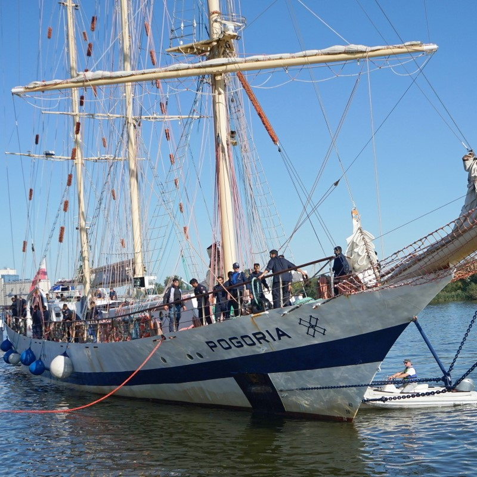

Najsławniejsze żaglowce Polski cz.2
STS Pogoria – polski żaglowiec, stalowa, trójmasztowa barkentyna zbudowana w 1980 roku w Stoczni Gdańskiej, pierwszy duży żaglowiec, zaprojektowany przez polskiego konstruktora statków, inż. Zygmunta Chorenia, pierwowzór dla kilku podobnych jednostek, w budowie których polskie stocznie się wyspecjalizowały: „Iskra”, bułgarska „Kaliakra”, „Oceania”
„Pogoria” została zbudowana na zamówienie Telewizji Polskiej (a dokładniej: Radiokomitetu) dla Bractwa Żelaznej Szekli. „Bractwo” powstało z inicjatywy kpt. Adama Jassera w 1973 r.
Pierwszym kapitanem „Pogorii” został były kpt. „Iskry” kmdr por. Piotr Bigaj, który następnie oddał dowództwo Krzysztofowi Baranowskiemu. Znaki przypominające krzyże, które przez wiele lat nosiła „Pogoria” na żaglach rejowych, to cztery skrzyżowane szekle, symbol Bractwa.
Poza nietypowymi dla „Pogorii” akwenami podbiegunowymi jednostka okazała się szybka, dzielna i bezpieczna, a ocenę tę potwierdziły następne długie rejsy statku, w tym rejs do Sri Lanki w pełnym okresie roku szkolnego z młodzieżą licealną na pokładzie, z opłynięciem po obu stronach Afryki (1983–1984), znany jako Szkoła pod Żaglami (inicjator i kapitan – K. Baranowski).
Uczestnicy rejsu godzą obowiązki załogi żaglowca (także „psie wachty”) z nauką. Była to prawdziwa szkoła charakterów, gdyż wyselekcjonowani z kilku tysięcy zgłoszeń chłopcy, po kilkuetapowych eliminacjach i obozie przygotowawczym, przerabiali, już na morzu, normalny program szkoły średniej, program bez ulg, na wysokim poziomie.
„Pogoria” regularnie bierze udział w regatach Tall Ships’ Races. W 1999 r. zdobyła prestiżowe Cutty Sark Friendship Trophy (dziś STI Friendship Trophy). W 2006 roku zajęła 6. miejsce, natomiast w 2007 roku – 7. W 2009 roku kolejny start w zawodach został przerwany na pierwszym etapie z powodu uszkodzenia żaglowca podczas sztormu, około 10 mil morskich od fińskiego wybrzeża.